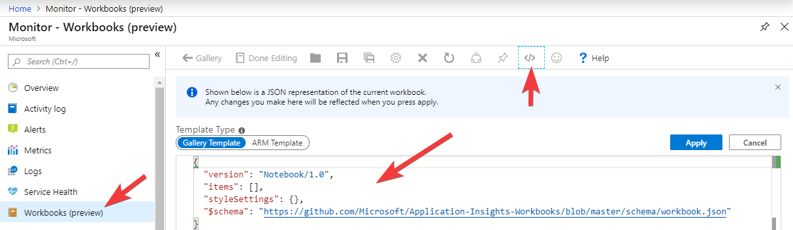

Getting Loaded
Load Testing. Not the coolest of subjects these days, you could argue, but one close to my heart. Back in 2004 I joined a software company called Mercury, at the time well know for a load testing product called LoadRunner.
For a while my career was very focused on measuring & reporting application performance in various ways. Fifteen years later and the whole industry has changed and evolved, load testing has slipped from the limelight; however people still obviously care about the performance of their web apps, so it has never gone away.
In this post I'll be exploring using a lightweight, modern load testing tool called k6 and combining it with Azure to provide a reporting solution
Overview
There's three main areas I'll be covering, these logically flow together but feel free to jump ahead:
- Using k6, running tests and generating data. You can read this part if you're just interesting in taking k6 for a spin
- Pushing results to Azure. This is more focused on Azure Log Analytics and it's APIs
- Building reports and viewing the data. Here I'll look at Kusto queries & Azure Monitor workbooks
I will just add at this point, what I'm covering does skip over some aspects of load testing, namely; the injection of load from multiple load generation locations/agents and interpreting the results (an art in itself). Also this hasn't been battle tested in production or with longer/larger tests
Introduction to k6
I discovered k6 (k6.io) a little while back, while investigating ways to artificially stress an application for a demo. K6 is an open source tool for load testing; it's lightweight, “developer centric” and effectively lets you create your loads tests as you would unit tests; in code form. This is important in the new world of “everything as code” and for CI/CD. It really fired up my imagination on what I could use it for on my own projects, and running it in Azure, which has lead eventually to this post
I won't go too much into all the features using k6, their docs can do a better job than I ever could{:target=”_blank”}. Suffice to say, your load test is a simple JavaScript file with one exported function which is called when running the test. A test file can be very simple, for example:
import http from "k6/http";
export default function() {
http.get("http://example.com");
};
I hope that's pretty self explanatory what is going on, if not this might not be the post for you! ;)
Let's expand this to a more real world scenario, testing against a REST API, which I imagine many people reading this will be looking to do. In this case some simple requests against Postman's nice API echo service{:target=”_blank”}
import http from "k6/http";
import { check } from "k6";
import { group } from "k6";
// Can override the API endpoint byt setting API_HOST env var
const API_HOST = __ENV.API_HOST || `https://postman-echo.com`
export default function() {
// Group for API GET requests
group("API GET Existing cheese", function() {
let url = `${API_HOST}/get?cheese=cheddar`;
let res = http.get(url);
// Validate result with a check function
check(res, {
"Status was 200": (r) => r.status === 200,
"Returned cheese has correct name": (r) => JSON.parse(r.body).args.cheese === "cheddar"
});
});
// Group for API POST requests
group("API POST New cheese", function() {
let url = `${API_HOST}/post`;
let payload = JSON.stringify({
"cheese": "edam",
});
let res = http.post(url, payload, { headers: { "Content-Type": "application/json" } });
// Validate result with a check function
check(res, {
"Status was 200": (r) => r.status === 200,
"Response has data object": (r) => typeof JSON.parse(r.body).data === "object"
});
});
};
Whoa! That's quite a jump, but again I think it's pretty easy to read and see what's going on. I've introduced a few things here:
- Groups to logically combine & name requests. I use these named groups in the reports, as well see later
- Checks to validate the responses. Anyone that's written unit tests for an API will be pretty familiar what is going on here, I'm simply checking what comes back (status codes, body), is what we expect based on the API we're calling. We could easily cross the line here into another level of testing, so I would advise to keep the checks to a minimum and leave the task of finding every edge case to your unit/integration tests.
Note. I could probably use an assertion library like Chai{:target=”_blank”} but I wanted to keep external dependencies out of this for now - One of the calls is a POST with a data payload, in JSON form
- I've parameterized the API hostname. Why? well in this case the URL is fixed to
postman-echo.com, but assuming in a real project you'll be running your tests under a CD pipeline. In those situations, the API endpoint is likely to be dynamically created prior to the test via some cloud resource, containers, Kubernetes etc.
Running Load Tests in Continuous Deployment
Running your tests is easy as calling k6 run, as it's a CLI tool, written in Go, you can grab the binary and you are all set. For example running k6 run mytest.js will fire off your test script and show some nice stats after the run
One thing you'll want to do is set the number of virtual users (VUs) and ramp them up or down across several timed “stages” in your test. This determines both the length of test and how much you want to hammer the target system.
Again this is something you specify in code, in your JavaScript test file. You just place an exported options object at the top of your script (full docs here{:target=”_blank”})
export let options = {
maxRedirects: 4,
stages: [
{ duration: '10s', target: 10 }, // 10 seconds of 10 VUs
{ duration: '20s', target: 20 }, // 20 seconds of 20 VUs
{ duration: '45s', target: 50 }, // 45 seconds of 50 VUs
{ duration: '3m', target: 80 }, // 3 minutes of 80 VUs
{ duration: '10s', target: 0 }, // 10 ramping down to zero VUs
],
thresholds: {
"failed requests": [ "rate < 0.1" ], // Check total failed requests
"http_req_duration": [ "avg < 500" ] // Check average response times under 500ms
}
};
The thresholds section is optional but can be used to mark the run as “failed” when certain metrics fall outside specific parameters.
When it comes to running from a Continuous Deployment (CD) pipeline, chances are your build-runner/agent won't have k6 installed, but you can work around that. I use Azure YAML Pipelines (and the Microsoft hosted agents), so here's an example step with a snippet of bash to include in your pipeline, that gets k6 binary and runs your test
- displayName: Run a load test with k6
bash: |
wget -q https://github.com/loadimpact/k6/releases/download/v0.25.1/k6-v0.25.1-linux64.tar.gz
tar -xzf k6-v0.25.1-linux64.tar.gz
./k6-v0.25.1-linux64/k6 run -q -e API_HOST=http://$(apiHost) loadtest.js --out json=result.json
workingDirectory: path/toYour/loadtests
Some comments:
- Yes we're running the test from the build agent, lengthy tests with high number of VUs is going to tie up the build machine. A better approach would be to trigger the run on some remote “load injector” (as we called them in the LoadRunner days), one idea I had was to use Azure Container Instances. The complexity of passing data to/from the remote system caused me to skip this idea for the short term and keep it simple.
-qenables quiet mode, this disables the progress bar, but you still get the nice stats printed at the end.- The
-e API_HOST=http://$(apiHost)argument passes the Azure Devops variableapiHostinto the script as an environmental variable API_HOST --out json=results.jsonwrites all the metrics and data for the run out at a JSON file. Which is what we'll use in the next step
Integration with Azure Monitor
Next task is to get the results.json somewhere where we can do something useful with it, visualize and report on what happened in the test run. The raw file is likely to be HUGE, and running reports directly off it via Excel or PowerBI is extremely problematic due to the density of the data points (down to the microsecond). What we need is some sort of time series database.
Azure Monitor Log Analytics (or just Log Analytics) is something typically used in Azure to record “system level data” i.e. monitoring data from a range of sources, logs, application events, machine metrics etc. It might not be your first choice for the problem in hand but it has a few characteristics which make it well suited:
- It is time series based
- It can cope with large datasets (far, far larger than our result.json)
- It has a powerful query system, Kusto
- It has an API for loading any type of data you wish
- It's available as a service
- Via Azure Monitor you can visualize the data with queries in various chart formats, directly in the Azure Portal
To get the data in to Log Analytics, I used the HTTP Data Collector API{:target=”_blank”}. This is a REST interface to push any data you wish into Log Analytics. I wrote a Node.js script to take a JSON file output from a k6 run and load it via this API
Some notes on developing this script:
- Authentication on the HTTP Data Collector API is based on a HMAC-SHA256 signed signature, generating this signature requires some very specific code, and the API is extremely fussy. This took a lot of time to get right, even with the code samples provided in the docs.
- The API accepts 30mb worth of payload in a single request, I had to find a way to batch and chunk the JSON file into multiple requests.
- You are able to inform Log Analytics if your data contains a timestamp, and it will use that in place of it's standard
TimeGeneratedfield that all entries have. This was very useful as the k6 data had the timestamps I needed and the microsecond level timing data was critical
Here is the resulting script: k6ToAzure.js
It is standalone (no external NPM modules used), just Node.js v10+ required. It takes four arguments: the JSON filename, a name for the run to tag the data with, the id of the target Log Analytics workspace, the shared key of the Log Analytics workspace
Getting your Log Analytics workspace id is pretty easy, it's in the portal, and obtainable via the Azure CLI with:
az resource show -n $workspaceName -g $resGroup --resource-type Microsoft.OperationalInsights/workspaces --query "properties.customerId" -o tsv`
The “shared key” is harder to come by, it's not easily found in the portal, but this Azure CLI REST call fetches it for us:
az rest --method POST --uri https://management.azure.com/subscriptions/$subId/resourcegroups/$resGroup/providers/Microsoft.OperationalInsights/workspaces/$workspaceName/sharedKeys\?api-version\=2015-11-01-preview --query "primarySharedKey" -o tsv
Adding the upload to your Azure Devops CD pipeline is just a matter of adding it to the bash task you already have. Assuming you've put k6ToAzure.js in the same directory as your loadtest JS file, and you've set workspaceId & workspaceKey as pipeline variables
node k6ToAzure.js result.json "Load Test for $(Build.BuildNumber)" $(workspaceId) $(workspaceKey)
Visualizing the Data
Finally the interesting part! Taking a look at the data with some pretty charts.
This is done using Kusto queries{:target=”_blank”}, Kusto is the query language used by Log Analytics and other Azure services (App Insights, Azure Data Explorer). Kusto has a pretty steep learning curve and is crazy powerful, so there's no way I'm going into any depth here. However to get started you can go to your Log Analytics workspace in the portal and go into the ‘Logs’ view
From here you'll see the data under “Custom Logs” in a table called LoadTesting_CL, you can start exploring the data with the query editor.
Note. There is a first time delay of about 15 mins before data will appear, subsequent uploads of new data will have a delay of about 2-5 minutes
Here is a example query which will display the http_req_duration (total time for each request in the load test) plotted over time. Data points are aggregated into 2 second chunks.
You will need to change <<given_run_name>> to whatever you called/tagged the run when k6ToAzure.js uploaded it (i.e. the second argument)
LoadTesting_CL
| where runName_s == "<<given_run_name>>"
| where metric_s == "http_req_duration"
| where isnotnull(data_value_d)
| project TimeGenerated, data_value_d, data_tags_group_s, data_tags_method_s
| summarize avg(data_value_d) by bin(TimeGenerated, 2000ms), data_tags_group_s, data_tags_method_s
| render timechart
(P.S. If this Kusto query stuff all is too much, you can skip ahead to the Workbook section below)
With a bit of luck it should look something like this 😁
If you ever want a list of your run names you can use this query
LoadTesting_CL
| distinct runName_s
Using Workbooks
Azure Monitor Workbooks{:target=”_blank”} are a very new and sorely under publicized feature of Azure. They allow you to build your own interactive and dynamic set of views and reports in the Azure Portal, pulling in Log Analytics and other data. Using Workbooks we can build a friendly view allowing users to select the run name from a drop down list as well as other parameters
I've created a workbook you can import and use, so there's no need to worry about the details of the Kusto queries. Workbooks are exported & shared in JSON format.
Link to workbook.json
You can import this by going to Azure Monitor in the portal, creating a new workbook, then clicking the code icon on the far right of toolbar. Then simply paste the JSON in, replacing what is there
Once imported you can save and use the workbook. Pick your subscription, log workspace and run name from the drop downs, and the workbook does the rest (I hope!)
Below are some screenshot examples from my own data, and this is a short video{:target=”_blank”}
Summary
This is been a long post (I always end up saying that!), but I've really enjoyed playing with k6 and experimenting with using the data. K6 is an fantastic tool for load testing, and can be easily added to any CD pipeline. Azure Log Analytics is a time series database in disguise, with a lot of features. Finally, Azure Monitor Workbooks are a little known feature of Azure allowing you to create useful interactive reports
Please get in touch if you try anything I've covered here 😃